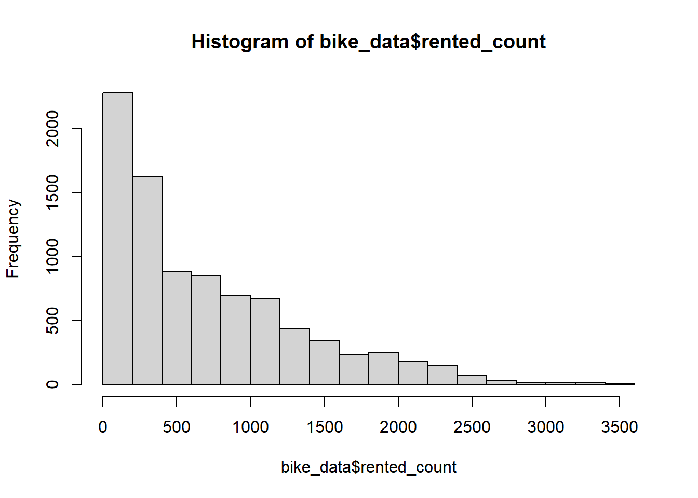
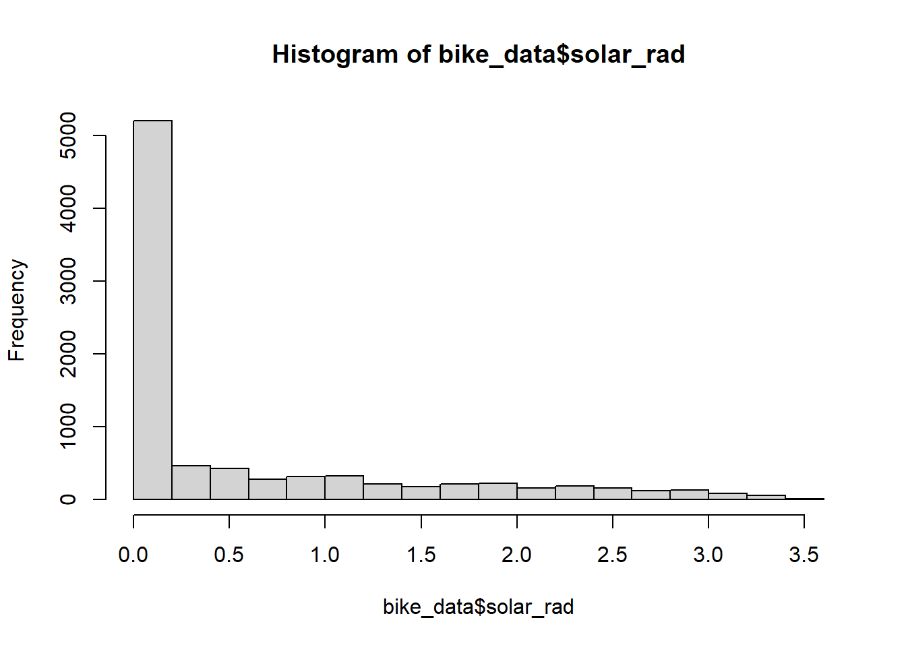
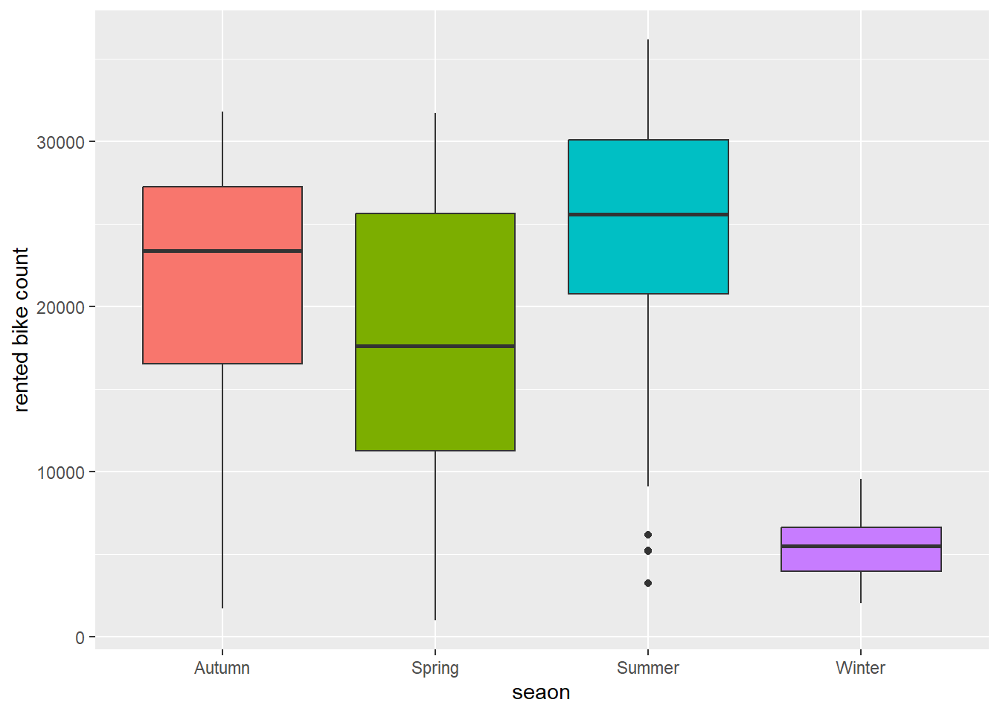
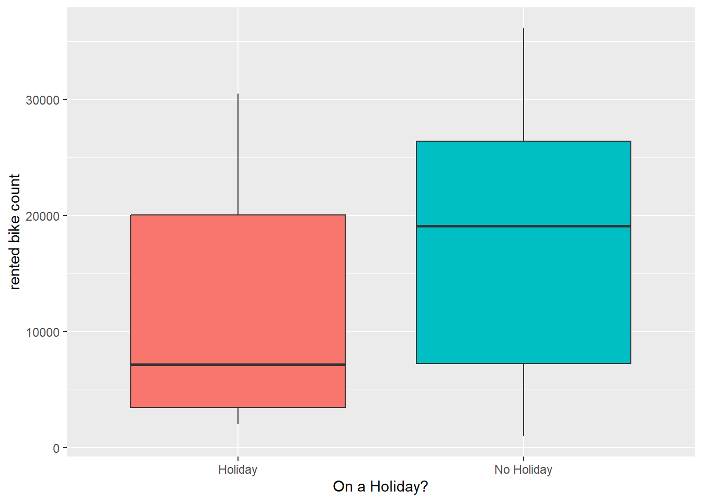
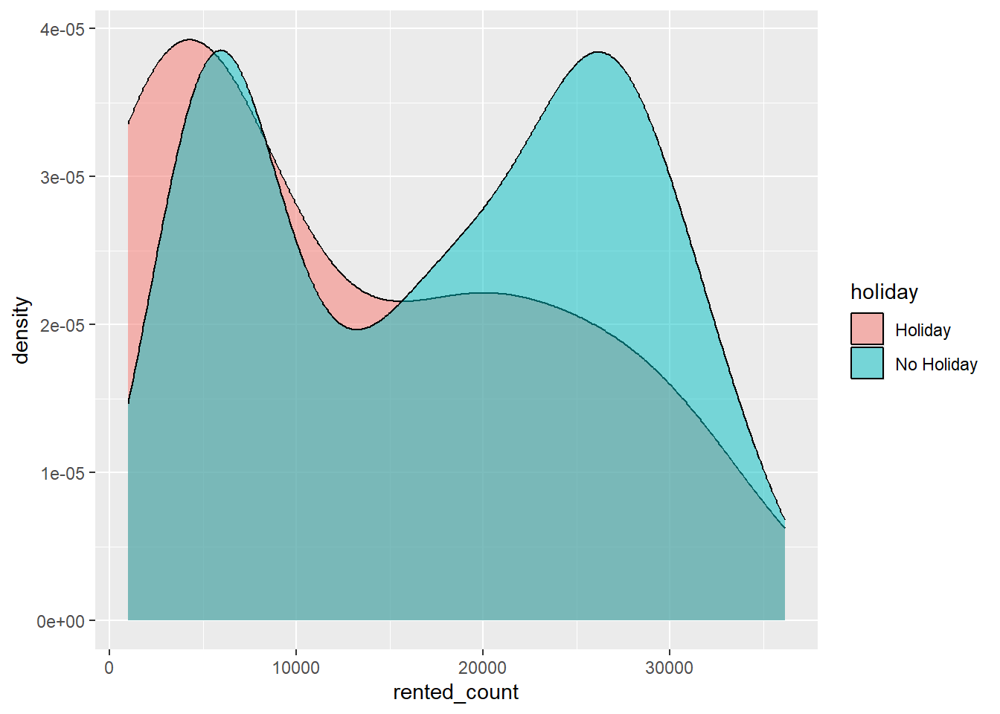
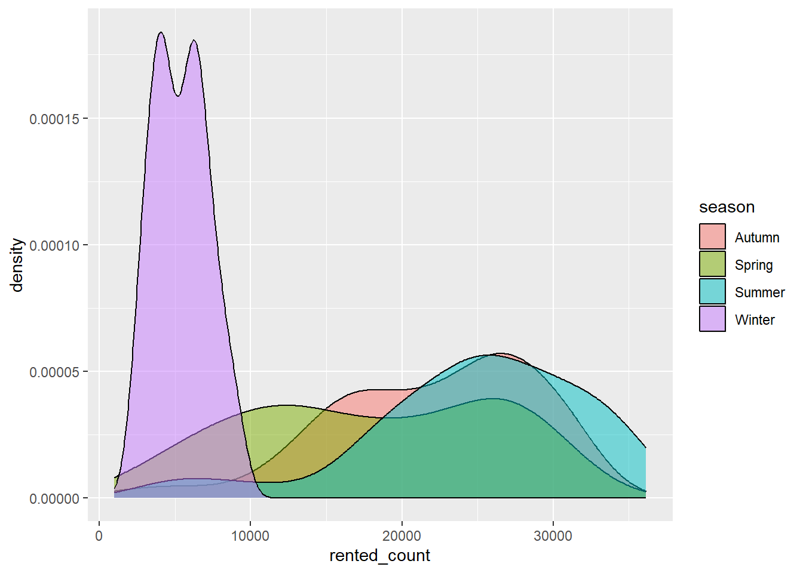

We are trying to find the best linear model (based on root mean square error) to predict the number of bikes rented in a day in Seoul.
Data Cleaning and EDA
We want to make the data nice to work with and we want to explore what it currently looks like to get a good idea of variables that will influence the prediction
The following objects are masked from 'package:base':
date, intersect, setdiff, union
library(readr)
Attaching package: 'readr'
The following object is masked from 'package:yardstick':
spec
The following object is masked from 'package:scales':
col_factor
library(skimr)
Warning: package 'skimr' was built under R version 4.5.2
library(janitor)
Warning: package 'janitor' was built under R version 4.5.2
Attaching package: 'janitor'
The following objects are masked from 'package:stats':
chisq.test, fisher.test
Loading the data and pre-liminarily cleaning it
#-----------------------Data and basic prep-------------------------------------bike_data <-read_csv("https://www4.stat.ncsu.edu/~online/datasets/SeoulBikeData.csv",locale =locale(encoding="latin1"))
Rows: 8760 Columns: 14
── Column specification ────────────────────────────────────────────────────────
Delimiter: ","
chr (4): Date, Seasons, Holiday, Functioning Day
dbl (10): Rented Bike Count, Hour, Temperature(°C), Humidity(%), Wind speed ...
ℹ Use `spec()` to retrieve the full column specification for this data.
ℹ Specify the column types or set `show_col_types = FALSE` to quiet this message.
#Number of missing data per columncolSums(is.na(bike_data))
Date Rented Bike Count Hour
0 0 0
Temperature(°C) Humidity(%) Wind speed (m/s)
0 0 0
Visibility (10m) Dew point temperature(°C) Solar Radiation (MJ/m2)
0 0 0
Rainfall(mm) Snowfall (cm) Seasons
0 0 0
Holiday Functioning Day
0 0
#Saving nice names in case we need to use them later (like in labeling)bike_labels <-names(bike_data)#Changing names so that manipulation is easiernames(bike_data) <-c("date", "rented_count", "hour", "temp", "humidity", "wind_speed","vis", "dew_temp", "solar_rad","rainfall", "snowfall", "season", "holiday", "functioning_day")
Exploring the data and doing other necessary cleaning
# -------------------(personal) EDA and other prep -----------------------------#convert date from character to date objectbike_data <- bike_data |>mutate(date =dmy(date))#simple numeric summariesnum_cols <- bike_data |>select(where(is.numeric))skim(num_cols) #Gives numeric summary and (small) histograms
Data summary
Name
num_cols
Number of rows
8760
Number of columns
10
_______________________
Column type frequency:
numeric
10
________________________
Group variables
None
Variable type: numeric
skim_variable
n_missing
complete_rate
mean
sd
p0
p25
p50
p75
p100
hist
rented_count
0
1
704.60
645.00
0.0
191.00
504.50
1065.25
3556.00
▇▃▂▁▁
hour
0
1
11.50
6.92
0.0
5.75
11.50
17.25
23.00
▇▇▆▇▇
temp
0
1
12.88
11.94
-17.8
3.50
13.70
22.50
39.40
▂▆▆▇▂
humidity
0
1
58.23
20.36
0.0
42.00
57.00
74.00
98.00
▁▅▇▇▅
wind_speed
0
1
1.72
1.04
0.0
0.90
1.50
2.30
7.40
▇▇▂▁▁
vis
0
1
1436.83
608.30
27.0
940.00
1698.00
2000.00
2000.00
▂▂▂▂▇
dew_temp
0
1
4.07
13.06
-30.6
-4.70
5.10
14.80
27.20
▂▃▇▇▆
solar_rad
0
1
0.57
0.87
0.0
0.00
0.01
0.93
3.52
▇▁▁▁▁
rainfall
0
1
0.15
1.13
0.0
0.00
0.00
0.00
35.00
▇▁▁▁▁
snowfall
0
1
0.08
0.44
0.0
0.00
0.00
0.00
8.80
▇▁▁▁▁
#double checking that I understand what the skim histograms look likehist(bike_data$rented_count)

hist(bike_data$solar_rad)

#Checking uniqueness of categorical datacat_cols <- bike_data |>select(-names(num_cols))cat_cols
# A tibble: 8,760 × 4
date season holiday functioning_day
<date> <chr> <chr> <chr>
1 2017-12-01 Winter No Holiday Yes
2 2017-12-01 Winter No Holiday Yes
3 2017-12-01 Winter No Holiday Yes
4 2017-12-01 Winter No Holiday Yes
5 2017-12-01 Winter No Holiday Yes
6 2017-12-01 Winter No Holiday Yes
7 2017-12-01 Winter No Holiday Yes
8 2017-12-01 Winter No Holiday Yes
9 2017-12-01 Winter No Holiday Yes
10 2017-12-01 Winter No Holiday Yes
# ℹ 8,750 more rows
cat_cols |>tabyl(season)
season n percent
Autumn 2184 0.2493151
Spring 2208 0.2520548
Summer 2208 0.2520548
Winter 2160 0.2465753
functioning_day n percent
No 295 0.0336758
Yes 8465 0.9663242
#Set categorical variables to factorsbike_data <- bike_data |>mutate(across(c("season", "holiday", "functioning_day"), as.factor))#summaries of bike data (by itself and by categorical variables)summary(bike_data$rented_count)
Min. 1st Qu. Median Mean 3rd Qu. Max.
0.0 191.0 504.5 704.6 1065.2 3556.0
# A tibble: 2 × 3
functioning_day mean_rented median_rented
<fct> <dbl> <dbl>
1 No 0 0
2 Yes 729. 542
# No bikes rented on non-functioning days, so taking out that columnbike_data <- bike_data |>filter(functioning_day =="Yes")
bike_data was filtered so that we only had days when the rental was functioning. Logically this makes sense, becaue there would be no rentals when it is not functioning, and that will hinder our prediction for the number of rentals when it is funcitoning
Creating new dataset that groups data by day instead of by hour
#Step 7:create new dataset to summarize across hours in a daybike_daily <- bike_data |>group_by(date, season, holiday) |>summarize(across(c(rented_count, rainfall, snowfall), sum, .names ="{.col}"),across(c(temp, humidity, wind_speed, vis, dew_temp, solar_rad), mean) ) |>ungroup()
`summarise()` has grouped output by 'date', 'season'. You can override using
the `.groups` argument.
bike_daily
# A tibble: 353 × 12
date season holiday rented_count rainfall snowfall temp humidity
<date> <fct> <fct> <dbl> <dbl> <dbl> <dbl> <dbl>
1 2017-12-01 Winter No Holiday 9539 0 0 -2.45 45.9
2 2017-12-02 Winter No Holiday 8523 0 0 1.32 62.0
3 2017-12-03 Winter No Holiday 7222 4 0 4.88 81.5
4 2017-12-04 Winter No Holiday 8729 0.1 0 -0.304 52.5
5 2017-12-05 Winter No Holiday 8307 0 0 -4.46 36.4
6 2017-12-06 Winter No Holiday 6669 1.3 8.6 0.0458 70.8
7 2017-12-07 Winter No Holiday 8549 0 10.4 1.09 67.5
8 2017-12-08 Winter No Holiday 8032 0 0 -3.82 41.8
9 2017-12-09 Winter No Holiday 7233 0 0 -0.846 46
10 2017-12-10 Winter No Holiday 3453 4.1 32.5 1.19 69.7
# ℹ 343 more rows
# ℹ 4 more variables: wind_speed <dbl>, vis <dbl>, dew_temp <dbl>,
# solar_rad <dbl>
Doing similar Exploration with this new dataset
#Find summary statistics of all numeric variablesnum_col_daily <- bike_daily |>select(where(is.numeric))bike_daily |>summarize(across(where(is.numeric),list(mean = mean, median = median, sd = sd),na.rm =TRUE))
Warning: There was 1 warning in `summarize()`.
ℹ In argument: `across(...)`.
Caused by warning:
! The `...` argument of `across()` is deprecated as of dplyr 1.1.0.
Supply arguments directly to `.fns` through an anonymous function instead.
# Previously
across(a:b, mean, na.rm = TRUE)
# Now
across(a:b, \(x) mean(x, na.rm = TRUE))
#Visualize by categorical dataggplot(bike_daily, aes(x = season, y = rented_count, fill = season)) +geom_boxplot() +labs(x ="seaon", y ="rented bike count") +theme(legend.position ="none")

ggplot(bike_daily, aes(x = holiday, y = rented_count, fill = holiday)) +geom_boxplot() +labs(x ="On a Holiday?", y ="rented bike count") +theme(legend.position ="none")

ggplot(bike_daily, aes(x = rented_count, fill = holiday)) +geom_density(alpha = .5)

ggplot(bike_daily, aes(x = rented_count, fill = season)) +geom_density(alpha = .5)

Prep-work before modeling
First step is to split the data between training and test. We want to stratify by season because (as we saw above) winter has a large impact on bike rentals. We split the data between training and testing to that we can validate how well our model fits data is has never seen. We are also further splitting the training data into 10 cross validation folds. This allows the models to have a more unbiased fit.
#----------------Split data-----------------------------------set.seed(222) #ensures results are always the samedata_split <-initial_split(bike_daily, prop = .75, strata ="season")#Create data frames for the two setstrain_data <-training(data_split)test_data <-testing(data_split)#Create cross validation foldscv_folds <-vfold_cv(train_data, 10)
Now we will make the recipes. Recipes are a way to standarize what you want variables you want your model to measure. Here we are making 3 recipes. These recipes have number of bikes rented as the response variable and the rest of the variables as predictor except for the date. Instead of using the date as a predictor, ee create a new variable based on if the date was a weekend or weekday. Then we normalize all the predictors to make calculations easier. We also create “dummy variables” for all of the categorical data. This means that it creates variables that are only 1 or 0 (true or false) that has the same information as the original columns.
Recipe 2 adds interaction terms as specified in instructions. This is likely because they have very high correlations in the matrix above.
Recipe 3 squares all of the numeric variables. Now the interactions include the new squared variables as well.
Each recipe is baked because it is easier to troubleshoot them here than when fitting. For recipes 2 and 3, only the names were needed for troubleshooting
#--------------Recipes---------------------------------------# First reciperecipe1 <-recipe(rented_count ~ ., data = train_data) |>update_role(date, new_role ="ID") |>step_date(date, features ="dow") |>step_mutate(day_type =factor(if_else(as.numeric(date_dow) %in%c(1,7), "weekend", "weekday"))) |>step_rm(date_dow) |>step_normalize(all_numeric_predictors()) |>step_dummy(all_nominal_predictors())recipe1 |>summary()
# A tibble: 12 × 4
variable type role source
<chr> <list> <chr> <chr>
1 date <chr [1]> ID original
2 season <chr [3]> predictor original
3 holiday <chr [3]> predictor original
4 rainfall <chr [2]> predictor original
5 snowfall <chr [2]> predictor original
6 temp <chr [2]> predictor original
7 humidity <chr [2]> predictor original
8 wind_speed <chr [2]> predictor original
9 vis <chr [2]> predictor original
10 dew_temp <chr [2]> predictor original
11 solar_rad <chr [2]> predictor original
12 rented_count <chr [2]> outcome original
# Checking for errorsrecipe1 |>prep(training = train_data) |>bake(train_data)
# Add squared numeric terms. Unsure if we should also use the square interactions, but it can only over-fit the datarecipe3 <-recipe(rented_count ~ ., data = train_data) |>update_role(date, new_role ="ID") |>step_date(date, features ="dow") |>step_mutate(day_type =factor(if_else(as.numeric(date_dow) %in%c(1,7), "weekend", "weekday"))) |>step_rm(date_dow) |>step_normalize(all_numeric_predictors()) |>step_poly(all_numeric_predictors(), degree =2) |>step_dummy(all_nominal_predictors())|>step_interact(terms =~starts_with("holiday"):starts_with("seas")) |>step_interact(terms =~starts_with("temp"):starts_with("season")) |>step_interact(terms =~starts_with("temp"):starts_with("rainfall")) recipe3 |>prep(training = train_data) |>bake(new_data = train_data) |>names()
Creating linear model and combining it with our recipes above to generate workflows. Workflows generalize the fitting process without data.
#-----------------Model Fit with LM------------------------#modellm_mod <-linear_reg() |>set_engine("lm")#Workflowswf1 <-workflow() |>add_model(lm_mod) |>add_recipe(recipe1)wf2 <-workflow() |>add_model(lm_mod) |>add_recipe(recipe2)wf3 <-workflow() |>add_model(lm_mod) |>add_recipe(recipe3)
Generating the fits with crossvalidation. We are interested in root mean square error (rmse), so that is the metric that is set in the fits.
#Fits with CV#Defining metrics bc fit takes **forever** on my laptop (I had to use my mom's for the tutorial)cv_fit1 <- wf1 |>fit_resamples(resamples = cv_folds,metrics =metric_set(rmse))cv_fit2 <- wf2 |>fit_resamples(resamples = cv_folds,metrics =metric_set(rmse))cv_fit3 <- wf3 |>fit_resamples(resamples = cv_folds,metrics =metric_set(rmse))
We determine the best fit based on the model with the lowest rmse. In this case, it is model 2. This means that the data is linear, but has some interactions
# A tibble: 1 × 6
.metric .estimator mean n std_err .config
<chr> <chr> <dbl> <int> <dbl> <chr>
1 rmse standard 4031. 10 229. pre0_mod0_post0
collect_metrics(cv_fit2) # 3032
# A tibble: 1 × 6
.metric .estimator mean n std_err .config
<chr> <chr> <dbl> <int> <dbl> <chr>
1 rmse standard 2926. 10 190. pre0_mod0_post0
collect_metrics(cv_fit3) # 8173
# A tibble: 1 × 6
.metric .estimator mean n std_err .config
<chr> <chr> <dbl> <int> <dbl> <chr>
1 rmse standard 4901. 10 1067. pre0_mod0_post0
Final steps
We use the best model from the crossvalidation phase (model 2) and use that to fit the test data that we put aside 2 sections ago. We find that the rmse has increased, but not by much, so this model is good (when compared to the other two). Since we have determined that this model is good, we extract the coefficients so that we can create the linear equation in the future
#Finalize model with full datasetbest_fit <- wf2 |>last_fit(data_split) best_fit |>collect_metrics() #RMSE = 3115
# A tibble: 2 × 4
.metric .estimator .estimate .config
<chr> <chr> <dbl> <chr>
1 rmse standard 3571. pre0_mod0_post0
2 rsq standard 0.878 pre0_mod0_post0